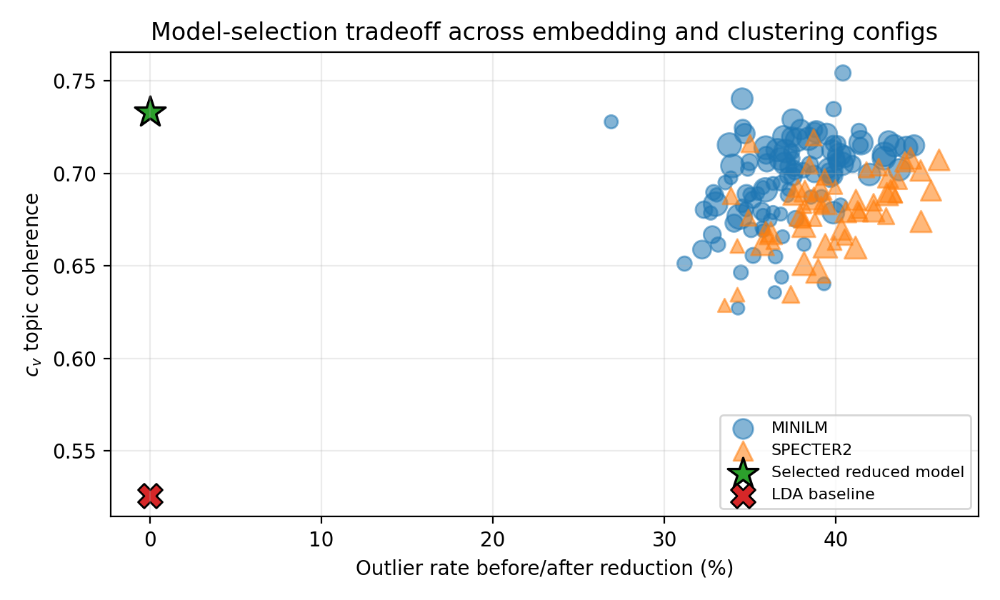
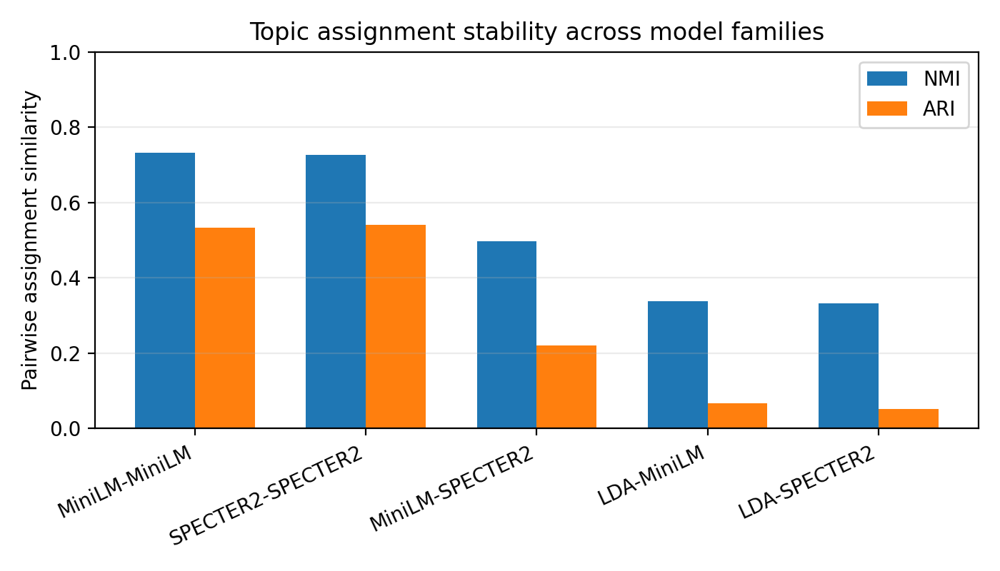

Data validity correction
Loading…
Why topic acceptance rate is not identifiable
αc = Ac / (Ac + Rpublicc + Rhiddenc)
Rhiddenc is unobserved, so visible rejected papers are not a complete denominator.
| Quantity | Can estimate? | Reason |
|---|---|---|
| Topic-level acceptance rate | No | Hidden rejected papers are missing |
| Accepted-paper topic share | Yes | Accepted papers and years are observable |
| Reviewer rating by topic | Yes | Reviews are linked to public accepted papers |
| Representative papers | Yes | Titles, abstracts, and OpenReview IDs are available |
Data-mining pipeline
From OpenReview records to validated topic-level evidence.
flowchart LR
A[OpenReview public records] --> B[Clean title + abstract]
B --> C[MiniLM / SPECTER2 embeddings]
C --> D[UMAP dimensionality reduction]
D --> E[HDBSCAN clustering]
E --> F[BERTopic topic representation]
F --> G[Outlier reduction]
G --> H[56 topic assignments]
H --> I[Accepted-paper share by year]
H --> J[Representative papers]
I --> K[Review-trend association]
J --> L[Qualitative validation]
Model selection

Assignment stability

Same-family BERTopic runs are substantially more stable than cross-embedding or LDA comparisons.
Topic movement: 2023 → 2024 → 2025
Endpoint movement is useful, but adjacent-year decomposition reveals late surges, early plateaus, and consistent declines.
These charts are interactive Plotly visualizations generated from topics.json, not static images. Hover points/bars for values.
Review–trend association
Click a point to inspect its topic and representative papers.
Careful interpretation: this is descriptive association, not causal evidence of reviewer bias.
Interactive topic table
Search, sort, and select a topic. The table contains all discovered topics.
| Topic | Size | 2023 | 2024 | 2025 | Δ net | z rating | Trajectory | View |
|---|
Topic inspector
Select a topic.
Representative papers
Reproducibility
Local preview
cd docs
python -m http.server 8000
# open http://localhost:8000GitHub Pages
git add docs
git commit -m "Add professor-facing demo"
git push
# Settings → Pages → Branch: main → Folder: /docs → SaveCore server-output checksums are available in checksums/server_result_checksums.txt.